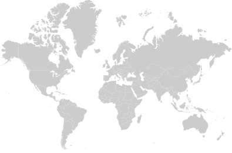

<style>
  .adec-map *, .adec-map *::before, .adec-map *::after { box-sizing: border-box; margin: 0; padding: 0; }

  .adec-map {
    position: relative;
    width: 100%;
    max-width: 1400px;
    margin: 0 auto;
    padding: 60px 40px 40px;
    overflow: hidden;
    font-family: "Source Sans 3", "Source Sans Pro", sans-serif;
    background: #003B5C;
  }

  .adec-map .map__wrapper {
    position: relative;
    width: 100%;
    overflow: hidden;
    max-height: 700px;
  }

  .adec-map .map__inner {
    position: relative;
    width: 100%;
    margin-top: -10%;
  }

  .adec-map .map__image {
    display: block;
    width: 100%;
    height: auto;
    opacity: 0.12;
    filter: brightness(0) invert(1);
  }

  /* Gradient fades */
  .adec-map .map__wrapper::before,
  .adec-map .map__wrapper::after {
    content: "";
    position: absolute;
    left: 0;
    right: 0;
    height: 100px;
    z-index: 3;
    pointer-events: none;
  }
  .adec-map .map__wrapper::before {
    top: 0;
    background: linear-gradient(to bottom, #003B5C, transparent);
  }
  .adec-map .map__wrapper::after {
    bottom: 0;
    background: linear-gradient(to top, #003B5C, transparent);
  }

  /* Marker base */
  .adec-map .marker {
    position: absolute;
    z-index: 2;
    pointer-events: none;
  }

  .adec-map .marker__dot {
    width: 12px;
    height: 12px;
    border-radius: 50%;
    background: #fff;
    position: relative;
    box-shadow: 0 0 8px rgba(255,255,255,0.5);
    pointer-events: none;
  }

  /* Ping animation */
  .adec-map .marker__dot::before,
  .adec-map .marker__dot::after {
    content: "";
    position: absolute;
    top: 50%; left: 50%;
    width: 12px; height: 12px;
    margin: -6px 0 0 -6px;
    border-radius: 50%;
    border: 1.5px solid rgba(255,255,255,0.6);
    animation: adec-ping 3s ease-out infinite;
  }
  .adec-map .marker__dot::after {
    animation-delay: 1.5s;
  }

  @keyframes adec-ping {
    0%   { transform: scale(1); opacity: 0.8; }
    100% { transform: scale(4); opacity: 0; }
  }

  /* Label */
  .adec-map .marker__label {
    position: absolute;
    display: flex;
    flex-direction: column;
    gap: 0px;
    white-space: nowrap;
    opacity: 0;
    animation: adec-fadeIn 0.6s ease forwards;
  }

  @keyframes adec-fadeIn {
    from { opacity: 0; transform: translateY(6px); }
    to   { opacity: 1; transform: translateY(0); }
  }

  .adec-map .marker__type {
    display: inline-block;
    padding: 2px 8px;
    font-size: 10px;
    font-weight: 600;
    letter-spacing: 1px;
    text-transform: uppercase;
    color: #fff;
    border-radius: 2px;
    width: fit-content;
  }

  .adec-map .marker__type--hq        { background: rgba(99,102,106,0.9); }
  .adec-map .marker__type--education  { background: rgba(0,114,206,0.85); }
  .adec-map .marker__type--subsidiary { background: rgba(0,121,107,0.9); }
  .adec-map .marker__type--importer   { background: rgba(0,114,206,0.85); }

  .adec-map .marker__city {
    font-size: 14px;
    font-weight: 700;
    letter-spacing: 1.5px;
    text-transform: uppercase;
    color: #fff;
    text-shadow: 0 1px 4px rgba(0,0,0,0.3);
  }

  .adec-map .marker__country {
    font-size: 11px;
    font-weight: 300;
    letter-spacing: 1px;
    text-transform: uppercase;
    color: rgba(255,255,255,0.6);
    margin-top: -3px;
  }

  /* ---------- Pin positions ---------- */
  .adec-map .marker--newberg    { left: 13.7%; top: 49.3%; }
  .adec-map .marker--nashville  { left: 23.8%; top: 54%; }
  .adec-map .marker--nuneaton   { left: 46.9%; top: 43.5%; }
  .adec-map .marker--paris      { left: 48.5%; top: 47.4%; }
  .adec-map .marker--sydney     { left: 89.2%; top: 83.2%; }

  /* ---------- Label offsets ---------- */
  .adec-map .marker--newberg .marker__label {
    top: -70px; left: -10px; animation-delay: 0.1s;
  }
  .adec-map .marker--nashville .marker__label {
    top: 25px; left: -10px; animation-delay: 0.25s;
  }
  .adec-map .marker--nuneaton .marker__label {
    top: -50px; right: 24px; left: auto; align-items: flex-end; animation-delay: 0.4s;
  }
  .adec-map .marker--paris .marker__label {
    top: -8px; left: 34px; animation-delay: 0.55s;
  }
  .adec-map .marker--sydney .marker__label {
    top: -70px; right: 0; left: auto; align-items: flex-end; animation-delay: 0.7s;
  }

  /* ---------- Responsive ---------- */
  @media (max-width: 1024px) {
    .adec-map { padding: 40px 20px 30px; }
    .adec-map .marker__city { font-size: 12px; letter-spacing: 1px; }
    .adec-map .marker__country { font-size: 10px; }
    .adec-map .marker__type { font-size: 9px; padding: 2px 6px; }
  }

  @media (max-width: 768px) {
    .adec-map { padding: 20px 10px; }
    .adec-map .marker__city { font-size: 10px; letter-spacing: 0.5px; }
    .adec-map .marker__country { display: none; }
    .adec-map .marker__type { font-size: 8px; padding: 1px 5px; }
    .adec-map .marker__dot { width: 8px; height: 8px; }
    .adec-map .marker__label { gap: 1px; }
    .adec-map .marker--newberg .marker__label { top: -45px; }
    .adec-map .marker--sydney .marker__label { top: -45px; }
  }

  @media (max-width: 480px) {
    .adec-map .marker__type { display: none; }
    .adec-map .marker__city { font-size: 9px; }
    .adec-map .marker__dot { width: 6px; height: 6px; }
    .adec-map .marker__dot::before,
    .adec-map .marker__dot::after { width: 6px; height: 6px; margin: -3px 0 0 -3px; }
    .adec-map .marker--newberg .marker__label,
    .adec-map .marker--sydney .marker__label { top: -30px; }
  }
</style>

<section class="adec-map" aria-label="A-dec Global Locations">
  <div class="map__wrapper">
    <div class="map__inner">

      

      <!-- Newberg, Oregon -->
      <div class="marker marker--newberg" aria-label="Newberg, Oregon — Global Headquarters">
        <div class="marker__label">
          <span class="marker__type marker__type--hq">Global Headquarters</span>
          <span class="marker__city">Newberg</span>
          <span class="marker__country">Oregon, USA</span>
        </div>
        <div class="marker__dot"></div>
      </div>

      <!-- Nashville, Tennessee -->
      <div class="marker marker--nashville" aria-label="Nashville, Tennessee — Education and Showroom">
        <div class="marker__dot"></div>
        <div class="marker__label">
          <span class="marker__type marker__type--education">Education &amp; Showroom</span>
          <span class="marker__city">Nashville</span>
          <span class="marker__country">Tennessee, USA</span>
        </div>
      </div>

      <!-- Nuneaton, United Kingdom -->
      <div class="marker marker--nuneaton" aria-label="Nuneaton, United Kingdom — Subsidiary">
        <div class="marker__dot"></div>
        <div class="marker__label">
          <span class="marker__type marker__type--subsidiary">Subsidiary</span>
          <span class="marker__city">Nuneaton</span>
          <span class="marker__country">United Kingdom</span>
        </div>
      </div>

      <!-- Paris, France -->
      <div class="marker marker--paris" aria-label="Paris, France — Exclusive Importer and Showroom">
        <div class="marker__dot"></div>
        <div class="marker__label">
          <span class="marker__type marker__type--importer">Exclusive Importer &amp; Showroom</span>
          <span class="marker__city">Paris</span>
          <span class="marker__country">France</span>
        </div>
      </div>

      <!-- Sydney, Australia -->
      <div class="marker marker--sydney" aria-label="Sydney, Australia — Subsidiary">
        <div class="marker__label">
          <span class="marker__type marker__type--subsidiary">Subsidiary</span>
          <span class="marker__city">Sydney</span>
          <span class="marker__country">Australia</span>
        </div>
        <div class="marker__dot"></div>
      </div>

    </div>
  </div>
</section>
